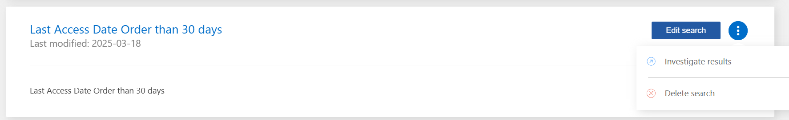

Richiedi modifiche alla documentazione
Richiedi modifiche alla documentazione Modifica questa pagina
Modifica questa pagina Scopri come collaborare
Scopri come collaborareAssegnazione di policy ai dati
Collaboratori
Le policy sono come un elenco preferito di filtri personalizzati che forniscono i risultati della ricerca nella pagina di analisi per le query di conformità più frequenti. La classificazione BlueXP offre una serie di policy predefinite basate sulle richieste più comuni dei clienti. È possibile creare policy personalizzate che forniscano risultati per ricerche specifiche della propria organizzazione.
Le policy offrono le seguenti funzionalità:
-
Policy predefinite NetApp in base alle richieste degli utenti
-
Possibilità di creare policy personalizzate
-
Aprire la pagina delle analisi con i risultati delle policy in un click
-
Invia avvisi e-mail agli utenti BlueXP o a qualsiasi altro indirizzo e-mail, quando alcune policy critiche restituiscono risultati, in modo da poter ricevere notifiche per proteggere i tuoi dati
-
Assegnare automaticamente le etichette AIP (Azure Information Protection) a tutti i file che corrispondono ai criteri definiti in una policy
-
Elimina automaticamente i file (una volta al giorno) quando alcune policy restituiscono risultati, in modo da proteggere automaticamente i dati
La scheda Policies nella dashboard di conformità elenca tutti i criteri predefiniti e personalizzati disponibili in questa istanza della classificazione BlueXP.

Inoltre, i criteri vengono visualizzati nell’elenco dei filtri della pagina di analisi.
Visualizzazione dei risultati della policy nella pagina delle analisi
Per visualizzare i risultati di un criterio nella pagina analisi, fare clic su  Per una policy specifica, quindi selezionare esamina risultati.
Per una policy specifica, quindi selezionare esamina risultati.

Creazione di policy personalizzate
È possibile creare policy personalizzate che forniscano risultati per le ricerche specifiche della propria organizzazione. I risultati vengono restituiti per tutti i file e le directory (condivisioni e cartelle) che corrispondono ai criteri di ricerca.
Tenere presente che le azioni per l’eliminazione dei dati e l’assegnazione delle etichette AIP in base ai risultati dei criteri sono valide solo per i file. Le directory che corrispondono ai criteri di ricerca non possono essere eliminate automaticamente o assegnate etichette AIP.
-
Dalla pagina Data Investigation (analisi dati), definire la ricerca selezionando tutti i filtri che si desidera utilizzare. Vedere "Filtraggio dei dati nella pagina Data Investigation" per ulteriori informazioni.
-
Una volta che tutte le caratteristiche del filtro sono esattamente come desiderate, fare clic su Create Policy from this search (Crea policy da questa ricerca).

-
Assegnare un nome al criterio e selezionare altre azioni che possono essere eseguite dal criterio:
-
Immettere un nome e una descrizione univoci.
-
Se si desidera, selezionare la casella per eliminare automaticamente i file che corrispondono ai parametri del criterio. Scopri di più eliminazione dei file di origine mediante un criterio.
-
Se si desidera inviare e-mail di notifica agli utenti BlueXP nell’account, selezionare la casella di controllo e scegliere l’intervallo di invio dell’e-mail. Scopri di più invio di avvisi e-mail in base ai risultati della policy.
-
Se si desidera, selezionare la casella se si desidera che le e-mail di notifica vengano inviate ad altri utenti, immettere fino a 20 indirizzi e-mail e scegliere l’intervallo di invio dell’e-mail.
-
Se si desidera, selezionare la casella per assegnare automaticamente le etichette AIP ai file che corrispondono ai parametri del criterio, quindi selezionare l’etichetta. (Solo se sono già state integrate le etichette AIP. Scopri di più "Etichette AIP".)
-
Fare clic su Crea policy.

-
Il nuovo criterio viene visualizzato nella scheda Criteri.
Invio di avvisi e-mail quando vengono rilevati dati non conformi
La classificazione BlueXP può inviare avvisi e-mail agli utenti BlueXP del tuo account quando alcune policy critiche restituiscono risultati, in modo da poter ricevere notifiche per proteggere i tuoi dati. È possibile scegliere di inviare le notifiche via email su base giornaliera, settimanale o mensile. Puoi anche scegliere di inviare avvisi e-mail a qualsiasi altro indirizzo e-mail (fino a 20 indirizzi e-mail) non presente nell’account BlueXP.
È possibile configurare questa impostazione quando si crea il criterio o quando si modifica un criterio.
Per aggiungere aggiornamenti e-mail a una policy esistente, procedere come segue.
-
Nella pagina elenco criteri, fare clic su Modifica per il criterio in cui si desidera aggiungere (o modificare) le impostazioni di posta elettronica.

-
Nella pagina Edit Policy (Modifica policy):
-
Selezionare la casella "Email all the users in this account" (Invia tutti gli utenti di questo account) se si desidera inviare e-mail di notifica agli utenti dell’account BlueXP e scegliere l’intervallo di invio dell’e-mail (ad esempio, Every Day).
-
Selezionare la casella "Send Email" (Invia e-mail) se si desidera inviare e-mail di notifica ad altri utenti, scegliere l’intervallo di invio e inserire fino a 20 indirizzi e-mail.

-
-
Fare clic su Save Policy (Salva policy) per visualizzare l’intervallo di invio del messaggio nella descrizione del criterio.
La prima e-mail viene inviata ora se ci sono risultati dalla policy, ma solo se alcuni file soddisfano i criteri della policy. Non vengono inviate informazioni personali nelle e-mail di notifica. Il messaggio di posta elettronica indica la presenza di file che corrispondono ai criteri del criterio e fornisce un collegamento ai risultati del criterio.
Eliminazione automatica dei file di origine mediante le policy
È possibile creare un criterio personalizzato per eliminare i file corrispondenti al criterio. Ad esempio, è possibile eliminare i file che contengono informazioni riservate e che sono stati rilevati dalla classificazione BlueXP negli ultimi 30 giorni.
Solo gli account Admins possono creare una policy per eliminare automaticamente i file.

|
Tutti i file che corrispondono alla policy verranno eliminati definitivamente una volta al giorno. |
-
Dalla pagina Data Investigation (analisi dati), definire la ricerca selezionando tutti i filtri che si desidera utilizzare. Vedere "Filtraggio dei dati nella pagina Data Investigation" per ulteriori informazioni.
-
Una volta che tutte le caratteristiche del filtro sono esattamente come desiderate, fare clic su Create Policy from this search (Crea policy da questa ricerca).
-
Assegnare un nome al criterio e selezionare altre azioni che possono essere eseguite dal criterio:
-
Immettere un nome e una descrizione univoci.
-
Selezionare la casella "Elimina automaticamente i file corrispondenti a questa policy" e digitare Elimina definitivamente per confermare che si desidera che i file vengano eliminati in modo permanente da questa policy.
-
Fare clic su Crea policy.

-
Il nuovo criterio viene visualizzato nella scheda Criteri. I file che corrispondono al criterio vengono cancellati una volta al giorno quando il criterio viene eseguito.
È possibile visualizzare l’elenco dei file che sono stati eliminati in "Riquadro Actions Status (Stato azioni)".
Assegnazione automatica delle etichette AIP con i criteri
È possibile assegnare un’etichetta AIP a tutti i file che soddisfano i criteri del criterio. È possibile specificare l’etichetta AIP durante la creazione del criterio oppure aggiungerla quando si modifica un criterio.
Le etichette vengono aggiunte o aggiornate continuamente nei file mentre la classificazione BlueXP esegue la scansione dei file.
A seconda che un’etichetta sia già applicata a un file e del livello di classificazione dell’etichetta, quando si modifica un’etichetta vengono eseguite le seguenti azioni:
| Se il file… | Quindi… |
|---|---|
Non ha alcuna etichetta |
L’etichetta viene aggiunta |
Dispone di un’etichetta con un livello di classificazione inferiore |
Viene aggiunta l’etichetta di livello superiore |
Dispone di un’etichetta con un livello di classificazione superiore |
Viene conservata l’etichetta di livello superiore |
Viene assegnata un’etichetta sia manualmente che tramite un criterio |
Viene aggiunta l’etichetta di livello superiore |
Viene assegnata a due diverse etichette da due policy |
Viene aggiunta l’etichetta di livello superiore |
Per aggiungere un’etichetta AIP a una policy esistente, procedere come segue.
-
Nella pagina elenco criteri, fare clic su Modifica per la policy in cui si desidera aggiungere (o modificare) l’etichetta AIP.

-
Nella pagina Edit Policy (Modifica policy), selezionare la casella per abilitare le etichette automatiche per i file che corrispondono ai parametri del Policy, quindi selezionare l’etichetta (ad esempio, General).

-
Fare clic su Save Policy (Salva policy) per visualizzare l’etichetta nella descrizione della policy.
|
|
Se un criterio è stato configurato con un’etichetta, ma l’etichetta è stata rimossa da AIP, il nome dell’etichetta viene disattivato e l’etichetta non viene più assegnata. |
Modifica dei criteri
È possibile modificare qualsiasi criterio per un criterio esistente creato in precedenza. Questo può essere particolarmente utile se si desidera modificare la query (gli elementi definiti utilizzando filtri) per aggiungere o rimuovere determinati parametri.
Tenere presente che per le policy predefinite è possibile modificare solo se le notifiche e-mail vengono inviate e se vengono aggiunte etichette AIP. Non è possibile modificare altri valori.
-
Nella pagina elenco criteri, fare clic su Modifica per il criterio che si desidera modificare.

-
Se si desidera modificare gli elementi di questa pagina (nome, descrizione, invio di notifiche e-mail e aggiunta di etichette AIP), apportare la modifica e fare clic su Save Policy (Salva policy).
Se si desidera modificare i filtri per la query salvata, fare clic su Edit Query (Modifica query).

-
Nella pagina di analisi che definisce la query, modificare la query aggiungendo, rimuovendo o personalizzando i filtri, quindi fare clic su Save Changes (Salva modifiche).

La policy viene modificata immediatamente. Tutte le azioni definite per quel criterio per inviare un’email, aggiungere etichette AIP o eliminare file si verificheranno al successivo interno.
Eliminazione dei criteri
È possibile eliminare qualsiasi policy personalizzata creata se non è più necessaria. Non è possibile eliminare alcuna policy predefinita.
Per eliminare un criterio, fare clic su Per una policy specifica, fare clic su Delete Policy (Elimina policy), quindi fare nuovamente clic su Delete Policy (Elimina policy) nella finestra di dialogo di conferma.
Elenco dei criteri predefiniti
La classificazione BlueXP fornisce le seguenti policy definite dal sistema:
| Nome | Descrizione | Logica |
|---|---|---|
S3 - dati privati esposti pubblicamente |
Oggetti S3 contenenti informazioni personali o sensibili, con accesso pubblico aperto in lettura. |
S3 Public E contiene informazioni personali o personali sensibili |
PCI DSS - dati obsoleti in 30 giorni |
File contenenti informazioni sulla carta di credito, modificati più di 30 giorni fa. |
Contiene la carta di credito E l’ultima modifica in 30 giorni |
HIPAA - dati obsoleti in 30 giorni |
File contenenti informazioni sulla salute, modificati l’ultima volta 30 giorni fa. |
Contiene i dati di salute (definiti come nel report HIPAA) E l’ultima modifica nell’arco di 30 giorni |
Dati privati - obsoleti in 7 anni |
File contenenti informazioni personali o sensibili, modificati da oltre 7 anni fa. |
File contenenti informazioni personali o sensibili, modificati da oltre 7 anni fa |
GDPR - cittadini europei |
File contenenti più di 5 identificatori dei cittadini di un paese dell’UE o tabelle DB contenenti identificatori dei cittadini di un paese dell’UE. |
File contenenti oltre 5 identificatori di un (uno) cittadino dell’UE o tabelle DB contenenti righe con oltre il 15% di colonne con identificatori UE di un paese. (Uno qualsiasi degli identificatori nazionali dei paesi europei. Non include Brasile, California, USA SSN, Israele, Sudafrica) |
CCPA - residenti in California |
File contenenti oltre 10 identificatori della licenza del driver California o tabelle DB con questo identificatore. |
File contenenti oltre 10 identificatori della licenza di guida California O tabelle DB contenenti la licenza di guida California |
Nomi dei soggetti dei dati - rischio elevato |
File con oltre 50 nomi di soggetti dati. |
File con oltre 50 nomi di soggetti dati |
Indirizzi e-mail - rischio elevato |
File con oltre 50 indirizzi e-mail o colonne DB con oltre il 50% delle righe contenenti indirizzi e-mail |
File con oltre 50 indirizzi e-mail o colonne DB con oltre il 50% delle righe contenenti indirizzi e-mail |
Dati personali - rischio elevato |
File con oltre 20 ID dati personali o colonne DB con oltre il 50% delle righe contenenti identificativi dati personali. |
File con oltre 20 colonne personali o DB con oltre il 50% delle righe contenenti dati personali |
Dati personali sensibili - rischio elevato |
File con oltre 20 identificatori di dati personali sensibili o colonne di database con oltre il 50% delle righe contenenti dati personali sensibili. |
File con oltre 20 colonne personali sensibili o DB con oltre il 50% delle righe contenenti dati personali sensibili |